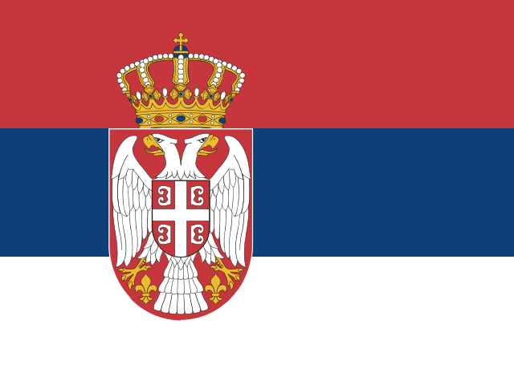

Productiebedrijven
Fabrieken, verwerkende industrie, assemblagebedrijven en automotivebedrijven.
Wij zoeken directe werkgevers met een reële personeelsbehoefte — in Polen en 36 Europese landen. Kandidaten kunnen wij zoeken via onze partners in Azië, Afrika, Noord- en Zuid-Amerika en op de Balkan.

Bedrijven die mensen aannemen voor hun eigen fabrieken, magazijnen, hotels, restaurants, landbouwbedrijven of eigen bouwprojecten.
Fabrieken, verwerkende industrie, assemblagebedrijven en automotivebedrijven.
Logistieke centra, verpakkingsbedrijven, overslagbedrijven.
Transport-, koerier- en distributiebedrijven die chauffeurs rijbewijs B, C en C+E zoeken.
Hotels, pensions, restaurants, toeristische complexen — ook seizoensgebonden.
Land- en tuinbouwbedrijven, met name met seizoenswerk.
Bouwbedrijven en fabrieken die lassers, elektriciens en monteurs zoeken.
Schoonmaakbedrijven en objecten die permanent onderhoud en schoonmaak vereisen.
Zorginstellingen en -locaties die verzorgenden of verpleegkundigen in dienst nemen (o.a. Duitsland).
Elk bedrijf met een reële, bevestigde personeelsbehoefte.
De doorlooptijd hangt af van de werkgever, de nationaliteit, de gereedheid van de documenten, de vereiste vergunningen, accreditaties, de ambassade en de beslissingen van overheidsinstanties. Termijnen uit eerdere zaken toetsen wij voor elke aanvraag opnieuw.

Servië — Eerder werd een termijn van 1–4 maanden genoemd voor een beslissing in een bepaald proces. Dat is niet de duur van het hele traject en geen garantie.De regels van de samenwerking bij het aanmelden van werkgevers.
Directe werkgevers die mensen in dienst nemen voor hun eigen fabrieken, magazijnen, hotels, restaurants, landbouwbedrijven of eigen bouwprojecten. Het waardevolst is een contactpersoon: de eigenaar, de directeur, de HR-afdeling of degene die over de aanname beslist.
Nee. Het zijn zoekgebieden en geen lijst van bevestigde, kant-en-klare opdrachten. Elk bedrijf en elk aanbod toetsen wij afzonderlijk.
De financiële voorwaarden en de overeenkomst stemmen wij individueel af. Het belangrijkste om mee te beginnen is een echte werkgever te vinden die mensen nodig heeft en over samenwerking wil praten.
Wij werven hen via partners, onder meer in: India, Nepal, Bangladesh, Pakistan, Sri Lanka, Filipijnen, Vietnam, Oezbekistan, Tadzjikistan, Azerbeidzjan en in andere landen in Azië, Afrika, Amerika en op de Balkan. Voor de Filipijnen en Sri Lanka controleren wij bovendien de vereiste accreditaties.
Wij controleren de personeelsbehoefte en de uitvoerbaarheid in het betreffende land en nemen daarna contact met u op over de voorwaarden.